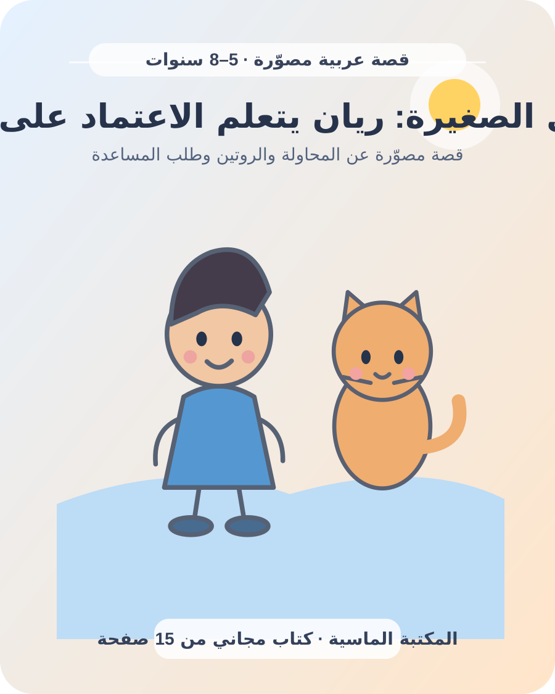

كيف أوصل المعلومة لطفلي؟ شرح بسيط يفتح باب الفهم
حين نسأل الطفل «هل فهمت؟» قد يجيب بنعم لأنه يريد إنهاء الحديث أو لا يعرف ما الذي لم يفهمه. إيصال المعلومة يبدأ بالإنصات لما يعرفه، ثم تقديم فكرة واحدة بوضوح وربطها بمثال يراه أو يجربه، وترك مساحة ليعيد شرحها بطريقته.

ابدأ مما يعرفه الطفل
قبل الشرح، اسأل: «ماذا تعرف عن هذا؟» أو «ما الذي حيّرك؟». استمع حتى النهاية؛ فقد يكشف السؤال عن تصور الطفل أو عن كلمة لم يفهمها. لا تفترض أنه لا يعرف شيئًا، ولا تصحح كل كلمة في اللحظة الأولى.
إذا سأل عن المطر، ابدأ بما لاحظه على النافذة، ثم أضف فكرة واحدة: «تتجمع قطرات الماء في السحب، وعندما تصبح ثقيلة تهبط مطرًا». ليس ضروريًا شرح دورة الماء كاملة في حديث واحد.
قدم فكرة واحدة بكلمات مألوفة
اجعل الجملة قصيرة، واستخدم كلمة يعرفها الطفل قبل تقديم مصطلح جديد. اشرح المصطلح مرة، ثم أعد استخدامه في مثال آخر. إذا كانت الفكرة مركبة، جزئها إلى سؤال صغير وخطوة تالية، وتوقف لتعرف إن كان الطفل يريد مثالًا أو رسمة.
تجنب جمع معلومات كثيرة في شرح واحد، خصوصًا إذا كان الطفل متعبًا أو مشتتًا. يمكن العودة للفكرة بعد استراحة أو في موقف يومي.
استخدم الأشياء والصور والتمثيل
تصبح المعلومة ملموسة عندما يراها الطفل أو يستخدمها. لشرح معنى النصف، قسموا فاكهة إلى جزأين متقاربين. لتعليم ترتيب الحقيبة، افتحوها معًا واستخدموا قائمة مصورة. ولشرح كلمة، أشر إلى غرض أو ارسم صورة بسيطة.
يمكن للطفل تمثيل الفكرة بحركة أو اختيار صورة توضحها. لا تحتاجون أدوات خاصة؛ أغراض البيت واللعب اليومي تكفي غالبًا، مع مراعاة السلامة وعدم استخدام قطع صغيرة مع طفل قد يضعها في فمه.
حول الشرح إلى حوار
التعلم ليس حديثًا طويلًا من طرف واحد. توقف بعد جملة أو خطوتين، وانتظر رد الطفل. إذا أشار إلى شيء أو طرح سؤالًا، استجب ثم تابع من النقطة التي تهمه. يصف مركز هارفارد لنمو الطفل قيمة التبادل بين إشارة الطفل واستجابة البالغ وانتظار رد الطفل التالي، ويمكن تطبيقه في اللعب والحديث.
بدل أسئلة الاختبار، استخدم: «كيف عرفت؟»، «ماذا تتوقع؟»، «هل تستطيع أن تريني طريقتك؟». إذا لم يعرف، أعد الشرح بمثال آخر من دون إحراجه. دليل التفاعل المتبادل.
تحقق من الفهم بلطف
قول «فهمت؟» لا يعطي دائمًا صورة واضحة. جرب: «أخبرني كيف ستبدأ»، أو «أي جزء تريد أن أشرحه ثانية؟». ويمكن للطفل أن يعلّم دميته أو يشرح الفكرة برسم. هذا ليس اختبارًا؛ الهدف أن نعرف هل نحتاج مثالًا آخر.
انتبه للفرق بين تذكر الكلمات وفهم الفكرة. قد يحفظ الطفل جملة ولا يعرف استخدامها؛ لذلك قدم موقفًا بسيطًا ودعه يطبق خطوة واحدة. امدح الاستراتيجية التي استخدمها، مثل الرسم أو تقسيم المهمة.
اللعب والتكرار القصير
كرر المعلومة في مواقف مختلفة بدل إعادة الدرس كاملًا. اليوم تسمون الألوان أثناء الرسم، وغدًا تبحثون عنها خارج المنزل. أدخل قافية أو لعبة أدوار أو بطاقة مصورة. التكرار المرن يتيح للطفل رؤية الفكرة من زاوية جديدة.
اختموا النشاط عندما تظهر علامات التعب أو الملل، ثم عودوا إليه لاحقًا. لا توجد مدة واحدة تناسب جميع الأطفال؛ لاحظوا الفضول والراحة وقدرة الطفل على التركيز.
قدّم المعلومة مع الطمأنينة والصدق
في الموضوعات التي تثير القلق، لا تخترع إجابة ولا تقدم تفاصيل تفوق حاجة الطفل. قل: «لا أعرف بعد، سأبحث معك»، أو «سأخبرك بما نعرفه الآن». إذا كان السؤال عن موقف عائلي أو خطر، قدم شرحًا صادقًا ومناسبًا للعمر ثم اسأل عما يقلقه.
استمع إلى شعوره قبل تصحيح المعلومة: «يبدو أن الأمر أخافك، تعال نتحدث عنه». توصي إرشادات اليونيسف بالإنصات لمشاعر الطفل وشرح الحدود بلغة هادئة تناسب عمره.
عدّل الطريقة حسب الطفل
بعض الأطفال يحبون الصور، وآخرون يفضلون الحركة أو الحديث. جرب أكثر من طريقة ولا تحول التفضيل إلى تصنيف ثابت. إذا صعبت الكلمة استخدم مثالًا آخر، وإذا كان الطفل يتعلم لغتين فسمّ الفكرة باللغتين من دون استعجال أو إحراج.
احترم اختلاف القدرة على التركيز والقراءة والتواصل. قد يحتاج الطفل إلى تعليمات خطوة خطوة أو صورة تذكره بما يفعل. إذا كان هناك قلق مستمر حول الفهم أو السمع أو اللغة، ناقشه مع طبيب الأطفال أو المختص المناسب.
مثال عملي: تعليم غسل اليدين
- قولوا الفكرة: «نغسل أيدينا قبل الطعام».
- اعرضوا الخطوات: ماء، صابون، فرك، شطف، تجفيف.
- نفذوا الحركة معًا واستخدموا أغنية قصيرة للتذكر.
- دعوا الطفل يشير إلى الخطوة التالية أو يشرحها.
- أعيدوا التجربة في موقف يومي وامدحوا ما تذكره.
عدّلوا الخطوات وفق عمر الطفل وقدرته وتعليمات الصحة المعتمدة في الأسرة.
قائمة سريعة قبل الشرح
- هل عرفت ما الذي يريد الطفل معرفته؟
- هل اخترت فكرة واحدة وكلمات مألوفة؟
- هل أستطيع أن أريه مثالًا أو صورة؟
- هل تركت وقتًا ليرد ويسأل؟
- هل سأتحقق من الفهم عبر شرحه بطريقته؟
- هل أحتاج تقسيم الشرح والعودة إليه لاحقًا؟
اقرؤوا مهمتي الصغيرة: ريان يتعلم الاعتماد على نفسه، واسألوا الطفل كيف ساعدت القائمة المصورة ريان على تذكر خطواته.
أسئلة شائعة
كيف أشرح فكرة صعبة لطفل صغير؟
قسمها إلى فكرة واحدة، واستخدم كلمة مألوفة ومثالًا محسوسًا، ثم انتظر سؤال الطفل قبل إضافة التفاصيل.
كيف أعرف أن طفلي فهم؟
اطلب منه أن يشرح أو يرسم أو يريك الخطوة بطريقته، واعتبر ذلك حوارًا لا اختبارًا.
ماذا أفعل إذا لم أعرف الإجابة؟
قل بصدق إنك لا تعرف بعد، ثم ابحث عن مصدر موثوق مناسب لعمر الطفل وتعلما معًا.
اقرأ قصة مصوّرة مجانية للأطفال ← · اكتشف كتب المكتبة ← · عودة إلى مقالات الأسرة